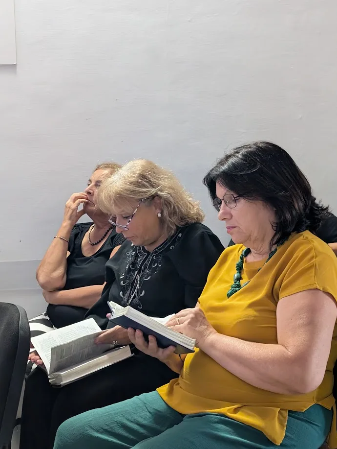

Bollette, esami, salute, figli, lavoro: l'ansia trova sempre una porta da cui entrare. L'apostolo Paolo scrive ai credenti di Filippi da una prigione, eppure la sua lettera è piena di gioia. Nel capitolo 4 ci lascia un invito che vale anche per noi, oggi, a Pozzuoli.
Non angustiatevi di nulla, ma in ogni cosa fate conoscere le vostre richieste a Dio in preghiere e suppliche, accompagnate da ringraziamenti; e la pace di Dio, che supera ogni intelligenza, custodirà i vostri cuori e i vostri pensieri in Cristo Gesù. (Filippesi 4:6-7)
1. Porta tutto a Dio in preghiera
Paolo non dice di far finta che i problemi non esistano. Dice di portarli a Dio, in ogni cosa. La preghiera non è l'ultima spiaggia quando tutto il resto ha fallito: è il primo passo. Possiamo parlare a Dio con parole semplici, come un figlio parla al padre.
2. Ringrazia, anche oggi
Le richieste vanno accompagnate da ringraziamenti. Ringraziare sposta lo sguardo da ciò che manca a ciò che Dio ha già fatto. Prova a farlo questa sera, prima di dormire:
- ricorda tre cose belle di oggi
- affida a Dio quella che ti preoccupa di più
- ringrazialo perché ti ascolta

3. Riempi la mente di ciò che è vero
Subito dopo Paolo aggiunge: tutte le cose vere, onorevoli, giuste, pure, amabili, di buona fama, quelle occupino i vostri pensieri. La pace di Dio non è solo un sentimento: è il frutto di una mente che si nutre della sua Parola.
Non sei solo in questo cammino. Ogni domenica alle 10:15 ci ritroviamo per pregare, lodare Dio e ascoltare la Bibbia insieme. C'è un posto anche per te.